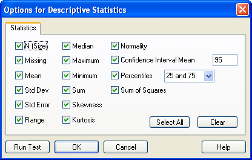

Setting Descriptive Statistics Options
You select the statistics that you would like to calculate in the Descriptive Statistics Options dialog box.
To change descriptive statistics test options:
- If you are going to run the test after changing test options, and want to select your data before you run the test, drag the pointer over your data.
- To open the Options for Descriptive Statistics dialog box, on the Analysis tab, click Descriptive Statistics from the drop-down list in the SigmaStat group.
-
Click Options.
The Options for Descriptive Statistics dialog box appears.
Figure 1. The Options for Descriptive Statistics dialog box  -
Clear any of the selected statistics settings you do not
want to include in the report.
The specific summary statistics that are appropriate for a given data set depend on the nature of the data. If the observations are normally distributed, then the mean and standard deviation provide a good description of the data. If not, then the median and percentiles often provide a better description of the data.
- To change the confidence interval, enter any number from 1 to 99 (95 and 99 are the most commonly used intervals) into the Confidence Interval Mean box.
- To change the percentile or confidence intervals computed, edit the values in the Percentile box.
- To select all statistics options, click Select All. To clear all selections, click Clear.
-
Click Run Test to perform the test with the selected
options settings.
Tip: To set the number of decimal places displayed, click the Sigma Button, and then click Options. In the Options dialog box, click the Report tab, and select Number of significant digits.